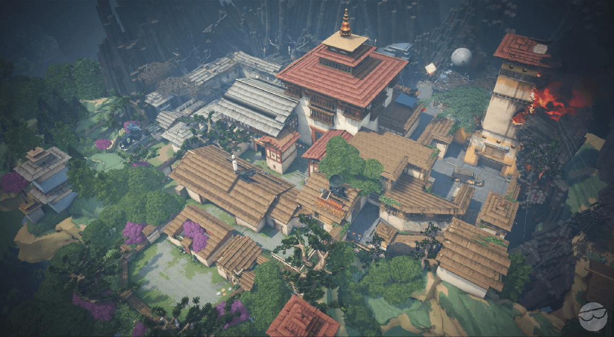
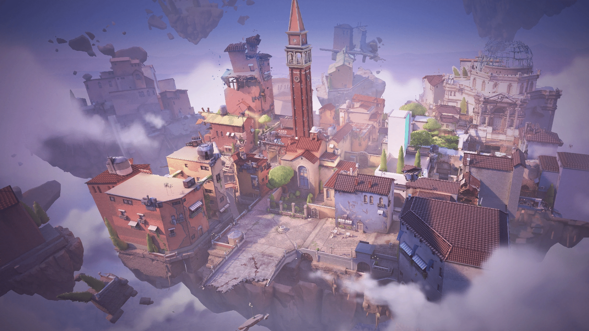
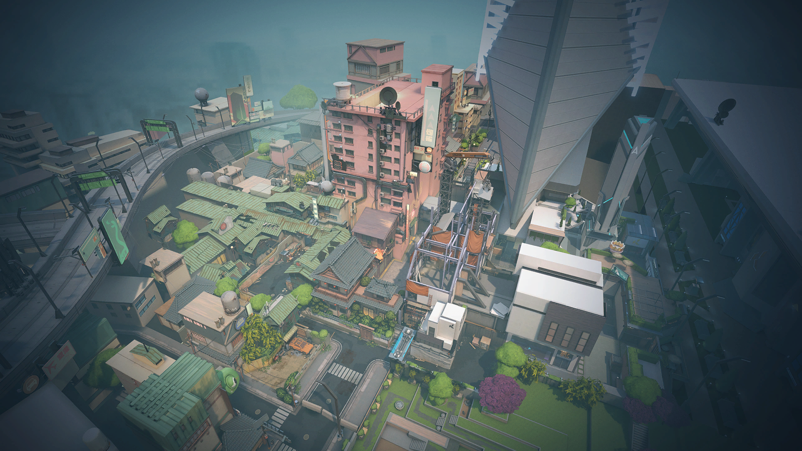
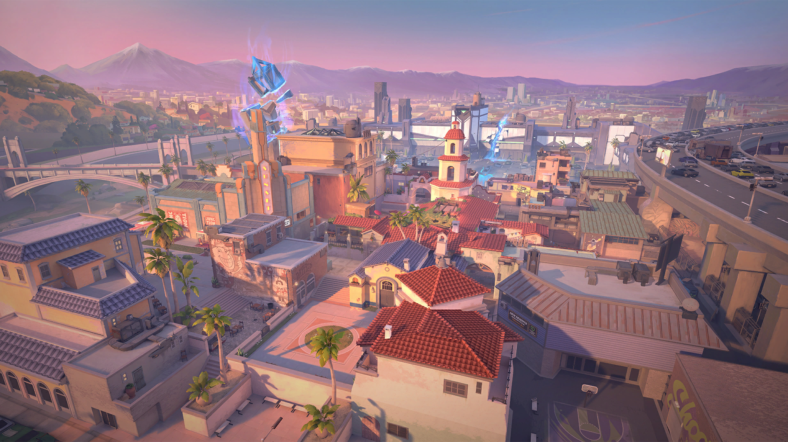
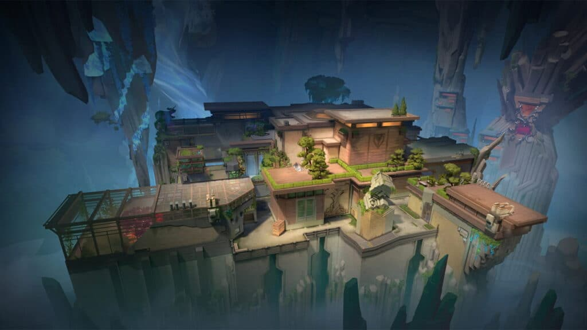
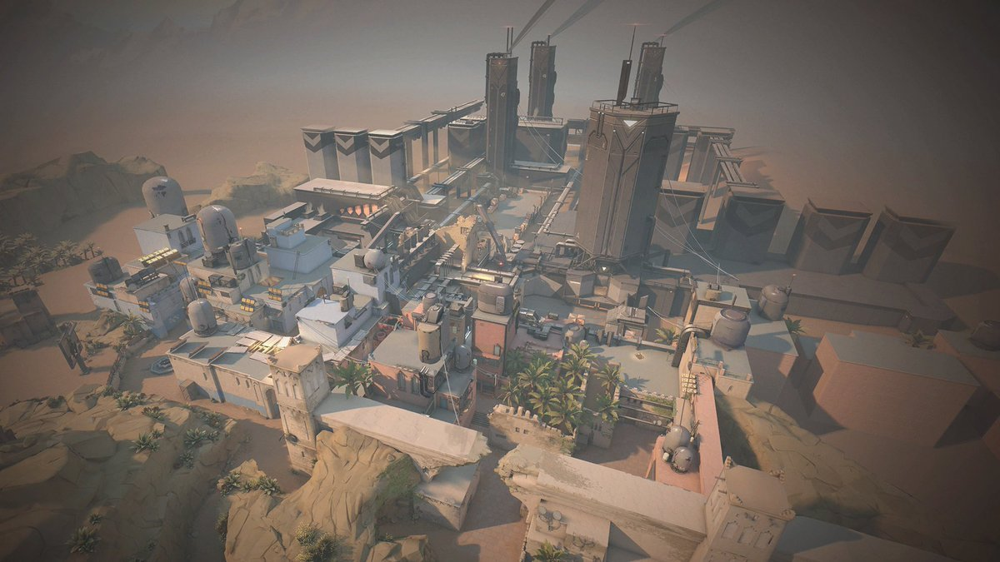
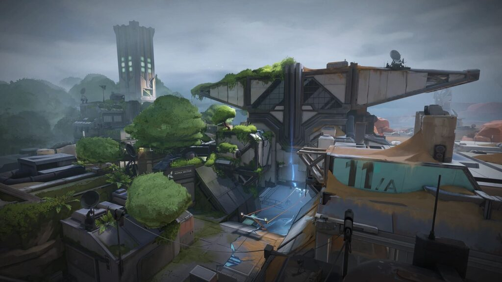
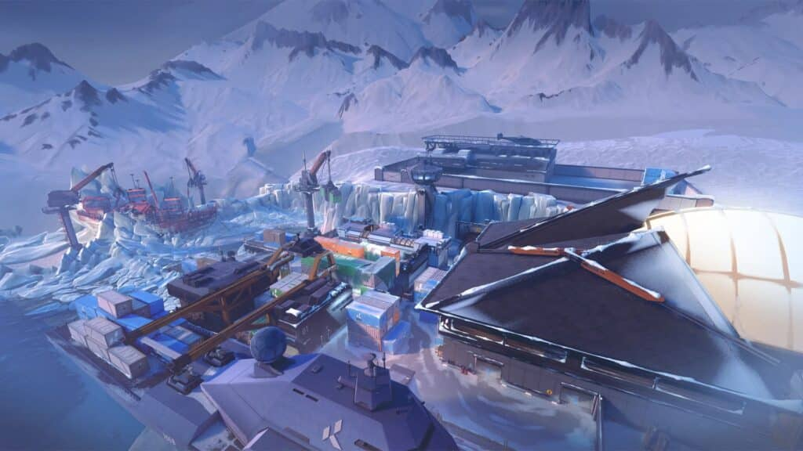
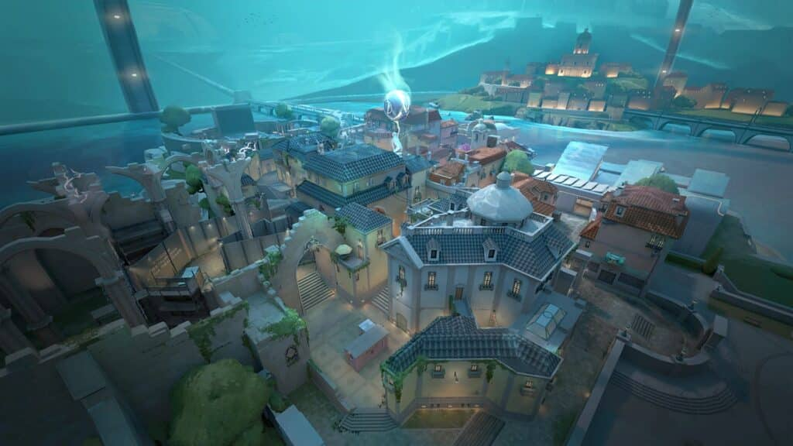

LOTUS 🌸
Second map with three bomb sites and rotating doors. It encourages constant movement and creative strategies.

HAVEN 🏯
1 of 2 maps with 3 diffrent bombsites (A, B, C). Teams must spread out and adapt quickly to defend or attack.
LOTUS 🌸
Second map with three bomb sites and rotating doors. It encourages constant movement and creative strategies.

ASCENT 🟩
A balanced map set in Italy with open mid control. Teams fight heavily for mid to gain map advantage and split sites effectively.

SPLIT 🌆
A tight urban map focused on verticality. Controlling mid is key to breaking into either site.

SUNSET 🌹
A Los Angeles-themed map with tight corners and strong mid control. Good coordination is key to winning.

ABYSS 🧪
A dangerous map with open edges and no boundaries. One wrong step can lead to falling off the map.

BIND 🏜
A unique desert map with no mid but features teleporters that allow fast rotations and tricky plays between sites.

BREEZE 🏝
A large tropical map with long sightlines. Great aim and sniping skills are very important here.

CORRODE 🟤
The newest map in valorant. It features long mid with a lot of corners and many boxes.

FRACTURE 🔥
A unique H-shaped map where attackers can come from both sides. Defenders must watch multiple directions at once.

ICEBOX 🧊
A snowy industrial map with vertical gameplay. Zip lines and elevated angles make aim and positioning very important.

PEARL 🌊
An underwater city map with no gimmicks. It focuses on pure gunplay and traditional map control.
As you may have seen, most maps have some sort of gimmick (rotating doors, 3 sites, ziplines, teleporters, void, ...)
This makes them unique and takes a lot of practice and mastering agents.